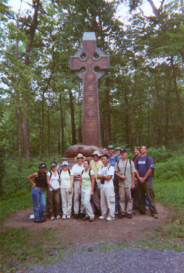
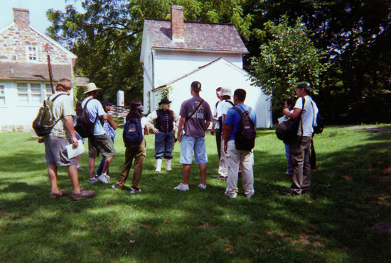
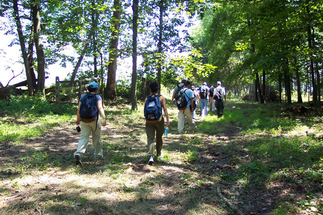
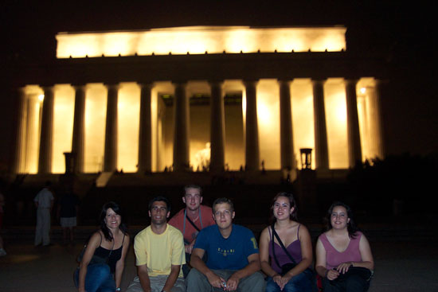

|
11 students joined Professor Waugh for the 2003 edition
of UCLA at Gettysburg: Kevin Batchelor, Andrea Ducusin,
Brian Johnson, Edward Looper, Lucinda Martinez, Chris
Moffitt, Andrew Park, Melissa Pitt, Amin Ramzan, Ryan
Terschluse, and Esther Varela.
|

UCLA students pose for a picture in front of the famous
Irish Brigade monument with their battlefield tour guide,
Professor Gary W. Gallagher of the University of
Virginia.
|
|

Tour guide Becky Lyons leads a tour of the battlefield's
farms; pictured is the John Slyder Farm located near
the base of Big Round Top.
|
|

Students follow the path that Confederate soldiers took
on day 2 of the battle.
|
|

The Lincoln Memorial at night.
|
|